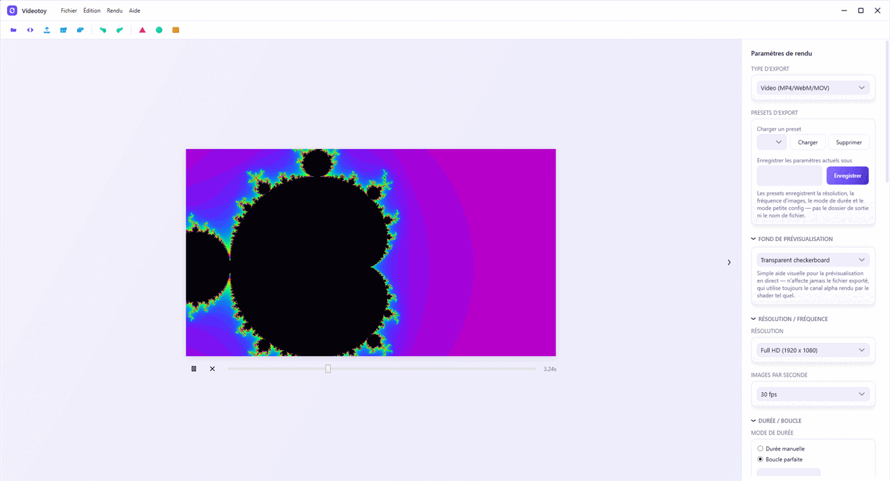
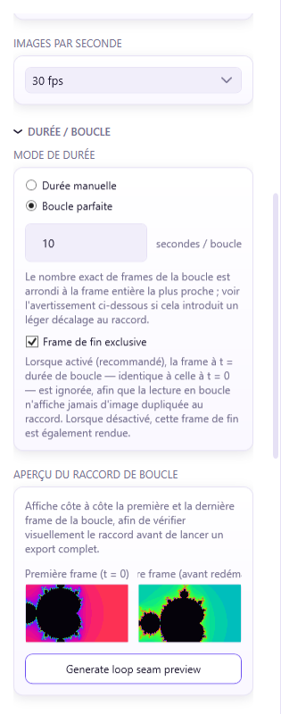
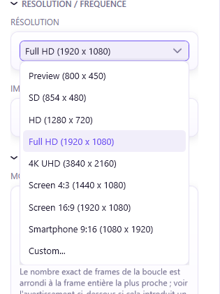
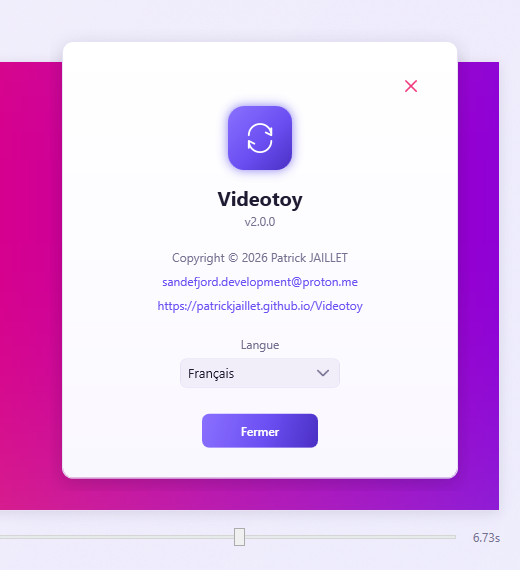

Your Shadertoy shaders, rendered as MP4 video — frame by frame.
Videotoy turns a GLSL shader into a video file through a fully deterministic render pipeline. No dependency on your machine's real-time performance: every frame is computed and encoded exactly like the ones before it, with FFmpeg bundled in — nothing else to install.

// pipeline
Three steps, from GLSL to delivered file
Every frame is computed from its frame number and the target FPS — never from the system clock. The render you export at 11pm on a modest laptop is identical to the one rendered on a workstation.
Load the shader
Drag a .glsl, .frag file, or a full Shadertoy
export (.json, multi-pass, Buffer A–D) straight onto the viewport.
Compilation errors show up with their line number.
Set up the export
Resolution, FPS, codec, manual duration or a perfect loop computed to the exact frame. A loop-seam preview and a file-size estimate before you even start rendering.
Export to MP4
Frames are streamed directly into FFmpeg's stdin pipe — no intermediate
disk write. Audio is synchronized and muxed in a single pass when the
shader uses an audio iChannel.
// features
Built for the perfect loop
Generative shaders often live on a loop — wallpaper, video dressing, installation art. Videotoy computes the seam down to the frame, instead of leaving you to guess.
A seamless join, no dropped or duplicate frame
Enter a loop duration in seconds: Videotoy computes
frameCount = round(duration × FPS), automatically
excludes the closing frame that's identical to the first one, and
warns you if the division isn't exact — with an assisted fix.
- "Manual duration" or "Perfect loop" mode
- Heuristic detection of the shader's native period
- Side-by-side preview of the first and last frame

From phone format to 4K, in one click
Preview, SD, HD, Full HD, 4K UHD — plus ready-made aspect presets for 4:3 screen, 16:9 screen, or 9:16 portrait smartphone. A custom resolution is always available too.
- 24 / 25 / 30 / 60 FPS or a custom value
- H.264 / H.265 codecs, CRF or bitrate control
- Export presets saved as JSON

// under the hood
The rest of the pipeline
Multi-pass
Buffer A/B/C/D and Common with ping-pong render targets for feedback shaders.
Audio input
WAV / MP3 / OGG as a spectrum or waveform source, generated deterministically per frame, then muxed on export.
Custom uniforms
Sliders generated dynamically to tweak the uniforms exposed by the shader, live in preview.
Low-spec mode
Strictly sequential rendering, no dropped frames, with CPU/GPU throttling when needed.
Windows 11 interface
Chromeless window, Mica effect, strict MVVM, single light theme.
French / English
Full localization with hot language switching, no restart required.
Render queue
Batch multiple exports, drag to reorder, and let them render one after another with per-item progress and error isolation.
Undo/redo
A shared history stack for every render setting, with cascade-aware snapshots and coalesced slider/text edits.
GLSL / WGSL / HLSL
Automatic shader-language detection, with GIF/WebP animated-image export and WebM/MOV/ProRes containers alongside MP4.
A clear record of who made what
Software name, SemVer version, copyright, contact and website — all gathered in the "About" window, accessible from the Help menu.
- Version displayed per strict SemVer
- MIT license

// download
Ready to render your first shader
The installer bundles FFmpeg — no external dependency to install. Check the release notes before updating an existing project.
v2.0.0
Windows 11 only
Inno Setup installer, FFmpeg included
MIT — free to use, open source